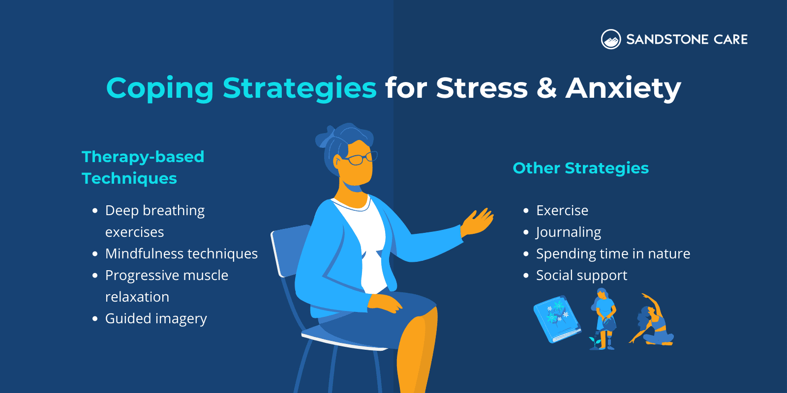
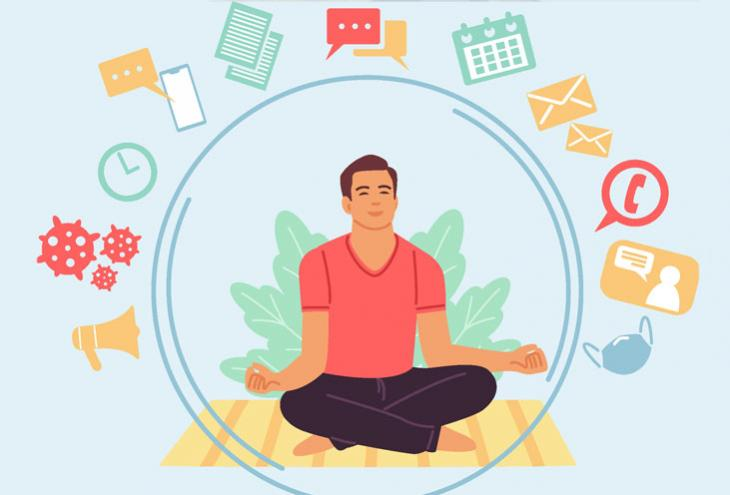
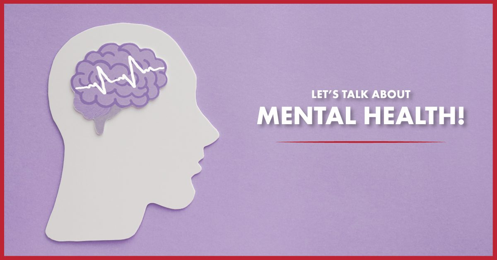

Self-Help Resources
Dealing with Anxiety
Anxiety is a common experience for many people. Learning how to manage anxiety can significantly improve one's quality of life.
Techniques to Manage Anxiety
- Breathing exercises: Practice deep breathing to calm your nervous system.
- Mindfulness meditation: Engage in mindfulness to stay present and reduce worry.
- Physical activity: Regular exercise helps release tension and reduce anxiety.
- Limit caffeine and alcohol: These substances can increase anxiety symptoms.
For more resources on mental health, visit our therapist directory or explore our self-help resources.
Overcoming Stress
Stress is a natural response to challenging situations. However, chronic stress can negatively impact your mental and physical health.
Practical Steps to Handle Stress
- Time management: Prioritize tasks and break them into smaller, manageable chunks.
- Relaxation techniques: Try progressive muscle relaxation, yoga, or a warm bath to de-stress.
- Social support: Connect with friends and family who can provide support and encouragement.
- Healthy lifestyle: Eating a balanced diet, getting enough sleep, and exercising regularly can reduce stress levels.
Make sure to take breaks and practice self-care to manage stress in a healthy way.
Mental Health Awareness
Mental health is just as important as physical health. Being aware of mental health issues and knowing when to seek help can prevent problems from escalating.
Why Mental Health Awareness is Important
Promoting mental health awareness helps people understand the importance of mental well-being, just as much as physical health. Awareness can lead to early diagnosis, better treatment outcomes, and a more compassionate environment for those dealing with mental health conditions.
How to Promote Mental Health
- Start conversations about mental health with friends, family, and colleagues.
- Share resources that provide information on mental health, such as articles, podcasts, or videos.
- Encourage individuals to seek help when they need it and provide support in their journey.
- Participate in mental health awareness campaigns and activities.
Signs You Should Look Out For
- Persistent sadness or depression
- Anxiety or overwhelming fear
- Withdrawal from social activities
- Inability to cope with daily problems or stress
- Substance abuse or harmful coping mechanisms
How to Get Help
If you or someone you know is experiencing any of these signs, it's important to seek professional help. Consider reaching out to a therapist or mental health professional. In severe cases, contacting emergency mental health services is necessary. Remember, seeking help is a sign of strength.
For more resources on mental health, visit our therapist directory or explore our self-help resources.